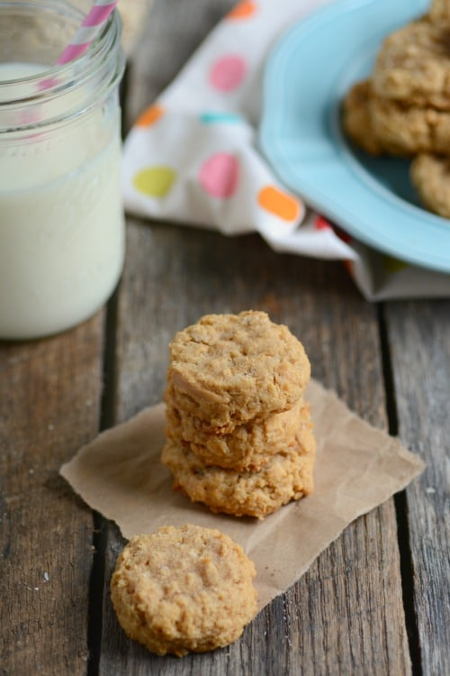

Peanut butter oat cookies

a simple 4 ingredient snack
These peanut butter cookies require only 4 ingredients which you likely already have at home!
No flour, brown sugar or baking soda necessary - these cookies are simple, hearty and filling!
ingredients
1 cup peanut butter (regular or natural both work)
1 egg (or one flax egg; see recipe note below)
1/2 cup oats (old fashioned or quick)
1/2 cup sugar
instructions
- Preheat oven to 350 degrees.
- Mix all ingredients together in a medium bowl.
- Roll into 1-inch balls or drop by rounded teaspoons onto ungreased cookie sheet (I use a cookie scoop).
- Press the tops of the cookies with the back of a fork (dipped in sugar) to make a crisscross design.
- Bake about 10-12 minutes or just until the tops start to look dry.
- Cool 1-2 minutes, then remove from baking sheet and place on cooking rack.